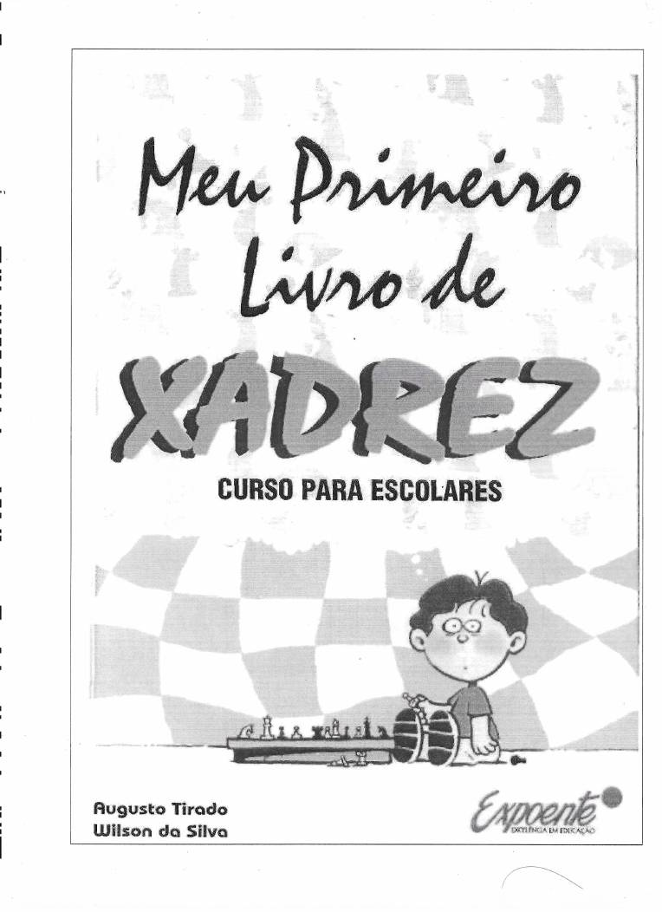

Aprenda xadrez do primeiro lance ao xeque-mate
Um curso completo para quem está começando. Baixe o livro em PDF, leia no seu ritmo e leve o tabuleiro para a mesa.
Baixar o livroMate do louco: o xeque-mate mais rápido do xadrez, em dois lances.

Meu Primeiro Livro de Xadrez
Curso para escolares, de Augusto Tirado e Wilson da Silva. Explica o jogo passo a passo, com exercícios para praticar.
Baixar PDFValor das peças
Uma referência rápida para decidir se uma troca vale a pena.
- ♙Peão1 ponto
- ♘Cavalo3 pontos
- ♗Bispo3 pontos
- ♖Torre5 pontos
- ♕Dama9 pontos
- ♔Reinão tem valor: perdê-lo encerra a partida